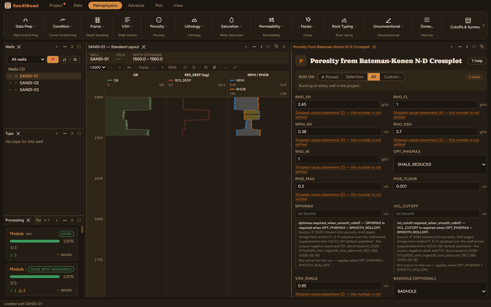

The chart-free analytic neutron-density crossplot, solved as a two-pseudo-mineral system in limestone units. The apparent matrix density RHOMAA_BK is an output, not an input; shale reduction clamps the neutron side only, per the method's own source.
Pseudo-mineral pair (Appendix B), by side of the density-porosity line: φN ≥ φD: φNa = 0.7 − 10^−(5·φN + 0.16) [B-11/B-12, ρ2 = 4.00] φN < φD: φDa = 1, φNa = −(1.17 + 2.06·φN) + 10^−(0.4 + 16·φN) [B-9/B-10] PHIX = (φDa·φN − φD·φNa) / (φDa − φNa) [B-6] RHOMAA_BK = (RHOBsr − PHIX·RHO_FL) / (1 − PHIX) [B-7] PHIE = PHIX·(1 − VSH), PHIT = PHIE + VSH·PHIT_SH
This is the real neutron-density crossplot porosity — the published Bateman-Konen Appendix B system solved in closed form, not a transcribed chart and not the quick-look average. On the same shale-reduced pair the two routes differ by 1.6–1.8 porosity units, which is why they are separate modules.
The crossplot is entered in limestone units — that is the published convention, and
it is why this pane has no RHO_MA input: the apparent matrix density
RHOMAA_BK is an output. The module checks the neutron curve's
DECLARED basis and refuses anything that is not limestone (converting with Neutron
Matrix Conversion or re-declaring, whichever states the truth about your delivery).
The SANDI wells deliver limestone-units NPHI; the basis was declared from the LAS
header and the run proceeded.

On these wells: 1 clean · 2 degraded (single-sample clamps at the
shale-reduced neutron guard and the PHIE floor — read the per-well report, accept or
re-pick). Outputs: PHIE_DNBK/PHIT_DNBK unlimited,
PHIE/PHIT limited, and RHOMAA_BK — put that last one on a log track: where
it departs 2.65 the crossplot is telling you the matrix is not clean quartz, which is
exactly the diagnostic a chart lookup cannot give you.
Everything below is generated from the same manifest the application builds this module’s pane from — descriptions, defaults, sources, ranges and pre-run checks here are exactly what the running application enforces.
The chart-free ANALYTIC neutron-density crossplot (Bateman & Konen 1977, Appendix B), solved as a two-pseudo-mineral system rather than looked up in a transcribed chart. This is a deterministic interpretation METHOD and is deliberately not a mode of phi_dn, whose AVERAGE and GAS_RMS are quick-look comparisons only: on the same shale-reduced pair the two routes differ by 1.64-1.79 p.u. The crossplot is entered in LIMESTONE units, so RHO_MA is not an input - the apparent matrix density RHOMAA_BK is an OUTPUT (B-7). Shale reduction clamps the NEUTRON side only, per the method's own source. PHIE = PHIX*(1-VSH); PHIT = PHIE + VSH*PHIT_SH.
| Role | Description | Resolves to | Required | Notes |
|---|---|---|---|---|
| BADHOLE | Bad-hole flag (flagged samples excluded, exclusion recorded) | BADHOLE | no | — |
| GAS_FLAG | Gas-crossover flag from condflag (provenance record only - never a correction) | XOVER_FLAG | no | — |
| COAL_FLAG | Coal flag from condflag (flagged samples blanked - coal apparent porosity is never rock porosity) | COAL_FLAG | no | — |
| TIGHT_FLAG | Tight flag from condflag (indicator only - never alters an output) | TIGHT_FLAG | no | — |
| COND_FLAG | Conditioning flag from condflag (indicator only - never alters an output) | COND_FLAG | no | — |
| RHOB | Density log | RHOB | yes | — |
| NPHI | Neutron porosity log | NPHI | yes | — |
| VSH | Limited volume of shale | VSH | yes | accepts quantity kind: VSH |
Whole-well defaults; per-zone values from the Zones pane take precedence inside their zones (except where a parameter is marked one-value-per-well).
Shale density
shale_density); the pane lists them with sources at the point of choice.Fluid density
fluid_density); the pane lists them with sources at the point of choice.Shale neutron porosity
shale_neutron_endpoint); the pane lists them with sources at the point of choice.Dry shale density
dry_shale_density); the pane lists them with sources at the point of choice.Formation water density
formation_water_density); the pane lists them with sources at the point of choice.Maximum allowed PHIE
max_effective_porosity); the pane lists them with sources at the point of choice.Floor applied to limited PHIE where the limit binds
Smooth roll-off increment above PHIE_MAX (IP DeltaPhiMax)
dphimax.required_when_smooth_rolloff — DPHIMAX is required when OPT_PHIEMAX = SMOOTH_ROLLOFF. Applies when: [object Object].
Smooth roll-off onset shale volume (IP VclCutoff)
vcl_cutoff.required_when_smooth_rolloff — VCL_CUTOFF is required when OPT_PHIEMAX = SMOOTH_ROLLOFF. Applies when: [object Object].
High-shale kill threshold (at or above it: PHIE = 0, PHIT = PHIT_SH)
high_shale_branch_threshold); the pane lists them with sources at the point of choice.Shale-reduced neutron clamp, lower
shale_reduction_clamp); the pane lists them with sources at the point of choice.Shale-reduced neutron clamp, upper
shale_reduction_clamp); the pane lists them with sources at the point of choice.PHIE limiting method
SHALE_REDUCEDMAXIMUMSMOOTH_ROLLOFFSHALE_REDUCED| Name | Description |
|---|---|
| PHIE_DNBK | PHIE from the analytic crossplot (unlimited) |
| PHIT_DNBK | PHIT from the analytic crossplot (unlimited) |
| RHOMAA_BK | Apparent matrix density returned by the crossplot (B-7) |
| PHIE | Limited effective porosity |
| PHIT | Limited total porosity |